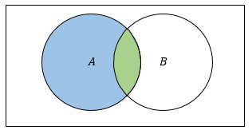
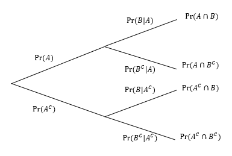
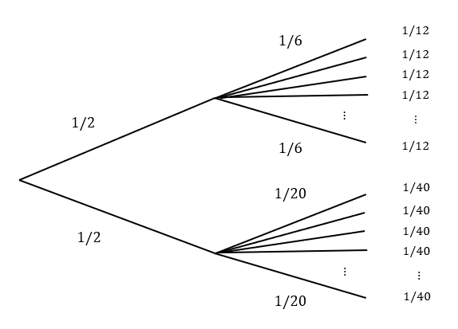
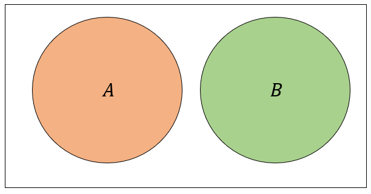

Definition 8.1
The joint probability of two events \(A\) and \(B\) is the probability that both events occur together (simultaneously) and is denoted as the probability of the intersection of the two events, \(P(A \cap B)\).
Definition 8.2
The marginal probability of an event is the probability of that event occurring by itself, regardless of whether any other events have or have not occurred. For sets \(A\) and \(B\), it would simply be denoted as \(P(A)\) and \(P(B)\).
Example 8.1
A university tracks the number of students passing and failing two courses, \(A\) and \(B\), in a semester. They are interested in the probability students pass both courses as well as the probability that they just pass course \(A\), regardless of whether they pass course \(B\).
Which of these is a joint probability and which is a marginal probability?
The probability they pass both courses is a joint probability \(P(A \cap B)\) and the probability they pass just course \(A\) is a marginal probability \(P(A)\).
Example 8.2
A survey tracks the number of people who are both employed \(A\) and own a car \(B\). The surveyors are interested in the probability that a person is both employed and owns a car, as well as the probability that a person is employed, regardless of car ownership.
Which of these is a joint probability and which is a marginal probability?
The probability that a person is both employed and owns a car is a YOUR ANSWER probability and the probability that a person is employed, regardless of car ownership, is a YOUR ANSWER probability.
Definition 8.3
A conditional probability is the probability an event occurring, given that another event has already occurred.
The conditional probability of event \(B\) occurring, given that event \(A\) has occurred, is denoted by:
\[P(B|A) = \frac{P(A \cap B)}{P(A)}\]

A Venn diagram showing two overlapping circles labeled A and B, with their intersection highlighted in green.
It can be helpful to visualize conditional probabilities using a tree diagram. This diagram illustrates that for two events to occur together, one event must first occur, and then the other event has to occur given that the first event has occurred.

Probability tree diagram showing branching events for A and B, with conditional probabilities and intersections labeled at each node.
Example 8.3
Consider an experiment where you first flip a fair coin. If the coin is heads, you roll a six-sided die and if it is tails you roll a 20-sided die. What is the probability you flip heads and roll a number greater than 4?

Example 8.3 (Continued)
Consider an experiment where you first flip a fair coin. If the coin is heads, you roll a six-sided die and if it is tails you roll a 20-sided die. What is the probability you flip heads and roll a number greater than 4?
Let \(B\) be rolling a number greater than 4 and \(A\) be getting a head, we want to find \(P(A \cap B)\). This is equal to the probability of getting a head \(P(A)\) times the probability of rolling a number greater than 4 given we got a head \(P(B|A)\). Thus, we have:
\[P(A \cap B) = \frac{1}{2} \times \frac{1}{3} = \frac{1}{6} \simeq 0.1667\]
Example 8.4
A company is evaluating job applicants for a new position. The probability that an applicant has a certain skill is 0.4. Given that an applicant has this skill, the probability that they pass the technical interview is 0.6.
What is the probability that a randomly selected applicant both has the skill \(A\) and passes the technical interview \(B\)?
YOUR ANSWER
Example 8.5
At a school, the probability that a student attends a tutoring session is 0.4. Given that a student attends the tutoring session, the probability that they also complete the homework assignment is 0.9.
What is the probability that a randomly selected student attends the tutoring session \(A\) and completes the homework assignment \(B\)?
YOUR ANSWER
Recall our computer scientist dataset:
Example 8.6
Using this dataset, what is our estimate of the probability that someone makes more than $100,000 and they have a bachelor’s degree?
Example 8.7
A retail store tracks its customers’ purchasing habits. The store knows that the probability a customer purchases a specific product and is a member of the store’s loyalty program is 0.2. The probability that a customer is a member of the loyalty program is 0.5.
What is the probability that a customer purchased the specific product \(B\), given that they are a member of the loyalty program \(A\)?
\[P(B|A) = \frac{P(A \cap B)}{P(A)} = \frac{0.2}{0.5} = 0.4\]
Example 8.8
A university tracks students’ attendance at review sessions and their performance on an exam. The probability that a student attends the review session and scores above 80 on the exam is 0.3. The probability that a student scores above 80 on the exam is 0.6.
What is the probability that a student attended the review session \(A\), given that they scored above 80 on the exam \(B\)?
YOUR ANSWER
Example 8.9
A market research company is studying smartphone purchasing behavior across different age groups. The probability that a person purchases a smartphone and belongs to the age group 18-34 is 0.15. The probability that a person belongs to the age group 18-34 is 0.40.
What is the probability that a person purchases a smartphone \(B\), given that they belong to the age group 18-34 \(A\)?
YOUR ANSWER
Example 8.10
How could we use the computer scientist dataset to answer the following question?
What is the probability that someone makes makes more than $100,000 given that they have had more than 5 years of education?
Definition 8.4
Two events \(A\) and \(B\) are said to be independent if the occurrence of one event does not affect the probability of occurrence for the other event. If two events are not independent, they are dependent.
If \(A\) and \(B\) are independent, then:
\[P(B|A) = P(B)\]
or
\[P(A|B) = P(A)\]
By the definition of conditional events, we have the following:
\[P(A \cap B) = P(B|A) P(A)\]
If events \(A\) and \(B\) are independent, then \(P(B|A) = P(B)\) and we have:
\[P(A \cap B) = P(B) P(A)\]
Thus, if events are independent, the probability of both occurring, is just the product of the individual probabilities.
This can be extended. If \(E_1, E_2, \dots, E_k\) are all independent, then
\[P(E_1 \cap E_2 \cap \cdots \cap E_k) = \prod_{i=1}^k P(E_i)\]
Example 8.11
A weather service tracks the correlation between rain and the use of umbrellas. The probability that it rains on a given day is 0.6. The probability that a person uses an umbrella on a rainy day is 0.8. The probability that it rains and a person uses an umbrella on the same day is 0.48.
Are the events “it rains” \(A\) and “a person uses an umbrella on a rainy day” \(B\) independent?
Yes, the events are independent since:
\[P(A \cap B) = 0.48 = 0.6 \times 0.8 = P(A)P(B)\]
Example 8.12
A health study tracks the relationship between exercise and maintaining a healthy diet. The probability that a person exercises regularly is 0.7. The probability that a person maintains a healthy diet is 0.5. The probability that a person both exercises regularly and maintains a healthy diet is 0.56.
Are the events “exercising regularly” \(A\) and “maintaining a healthy diet” \(B\) independent?
No, the events are not independent since
\[P(A \cap B) = 0.56 \neq 0.7 \times 0.5 = P(A)P(B)\]
Example 8.13
A health survey tracks smoking and drinking behaviors among adults. The probability that an adult smokes is 0.3. The probability that an adult drinks alcohol is 0.4. The probability that an adult both smokes and drinks alcohol is 0.15.
Are the events “smoking” \(A\) and “drinking alcohol” \(B\) independent?
YOUR ANSWER
Example 8.14
Consider an experiment where you roll two six-sided dice. Are the events “rolling a sum of 7” \(A\) and “rolling at least one 3” independent \(B\)?
YOUR ANSWER
Example 8.15
A bag contains 5 red balls and 3 blue balls. Are the events “drawing a red ball on the first draw” and “drawing a red ball on the second draw” independent if the balls are drawn without replacement?
We want to know if the conditional probability of drawing a red ball on the second draw, given that a red ball was drawn on the first draw is just equal to the marginal probability of drawing a red ball. This is not the case, so the events are not independent.
\[P(R_2|R_1) = \frac{4}{7} \neq \frac{5}{8} = P(R_2)\]
Example 8.16
A bag contains 5 red balls and 3 blue balls. Are the events “drawing a red ball on the first draw” and “drawing a red ball on the second draw” independent if the balls are drawn with replacement?
YOUR ANSWER
Theorem 8.1
If events \(A\) and \(B\) are independent, then \(A\) and \(B^C\) are also independent (as are \(A^C\) and \(B\) and \(A^C\) and \(B^C\)).
\[\begin{align} P(A \cap B^C) &= P(A) - P(A \cap B) \\ &= P(A) - P(A)P(B) \\ &= P(A)[1-P(B)] \\ &= P(A)P(B^C) \end{align}\]
If two events are disjoint (mutually exclusive), then are they also independent?

If events are disjoint, they cannot be independent. If one happens, we know the other didn’t.